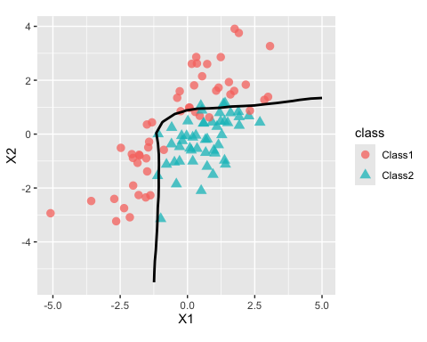
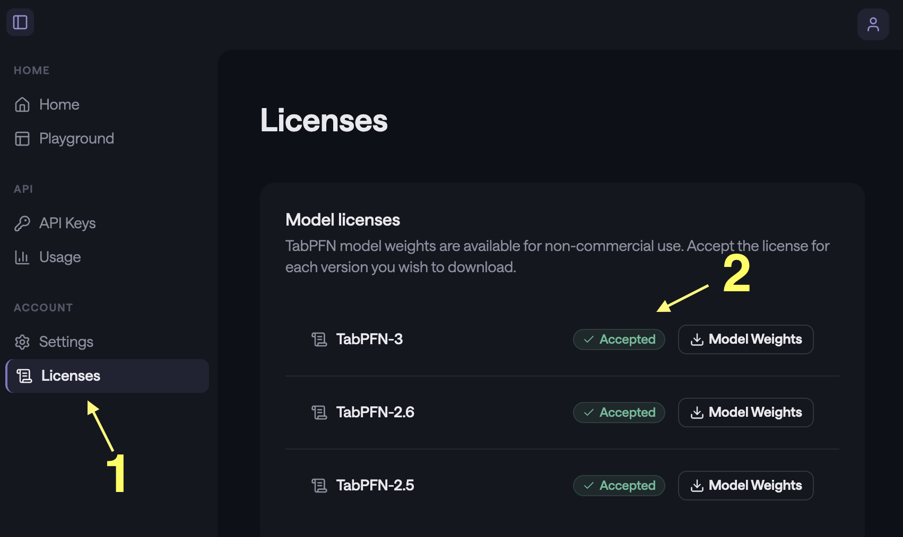

tabpfn, meaning prior fitted networks for tabular data, is a deep-learning model. See:
- Transformers Can Do Bayesian Inference (arXiv, 2021)
- TabPFN: A Transformer That Solves Small Tabular Classification Problems in a Second (arXiv, 2022)
- Accurate predictions on small data with a tabular foundation model (Nature, 2025)
This R package is a wrapper of the Python library via reticulate. It has an idiomatic R syntax using standard S3 methods.
Installation
You can download the package from CRAN via:
install.packages("tabpfn")or you can install the development version of tabpfn like so:
You’ll need a Python virtual environment to access the underlying library. After installing the R package, tabpfn will install the required Python bits when you first fit a model:
> library(tabpfn)
>
> predictors <- mtcars[, -1]
> outcome <- mtcars[, 1]
>
> # XY interface
> mod <- tab_pfn(predictors, outcome)
Downloading uv...Done!
Downloading cpython-3.12.12 (download) (15.9MiB)
Downloading cpython-3.12.12 (download)
Downloading setuptools (1.1MiB)
Downloading scikit-learn (8.2MiB)
Downloading numpy (4.9MiB)
<downloading and installing more packages>
Downloading llvmlite
Downloading torch
Installed 58 packages in 350ms
> mod
tabpfn Regression Model
Training set
i 32 data points
i 10 predictorsExample
After loading the package:
we can fit a model via the standard x/y interface.
set.seed(364)
reg_mod <- tab_pfn(mtcars[1:25, -1], mtcars$mpg[1:25])
reg_mod
#> TabPFN Regression Model
#> Training set
#> ℹ 25 data points
#> ℹ 10 predictorsThere are also formula and recipes interfaces.
Prediction follows the usual S3 predict() method:
predict(reg_mod, mtcars[26:32, -1])
#> # A tibble: 7 × 1
#> .pred
#> <dbl>
#> 1 31.4
#> 2 24.3
#> 3 24.8
#> 4 16.4
#> 5 18.9
#> 6 14.4
#> 7 22.5tabpfn follows the tidymodels prediction convention: a data frame is always returned with a standard set of column names.
For a classification model, the outcome should always be a factor vector. For example, using these data from the modeldata package:
library(modeldata)
#>
#> Attaching package: 'modeldata'
#> The following object is masked from 'package:datasets':
#>
#> penguins
library(ggplot2)
two_cls_train <- parabolic[1:400, ]
two_cls_val <- parabolic[401:500,]
grid <- expand.grid(X1 = seq(-5.1, 5.0, length.out = 25),
X2 = seq(-5.5, 4.0, length.out = 25))
set.seed(3824)
cls_mod <- tab_pfn(class ~ ., data = two_cls_train)
grid_pred <- predict(cls_mod, grid)
grid_pred
#> # A tibble: 625 × 3
#> .pred_Class1 .pred_Class2 .pred_class
#> <dbl> <dbl> <fct>
#> 1 0.997 0.00273 Class1
#> 2 0.998 0.00217 Class1
#> 3 0.998 0.00182 Class1
#> 4 0.998 0.00155 Class1
#> 5 0.998 0.00167 Class1
#> 6 0.998 0.00222 Class1
#> 7 0.996 0.00438 Class1
#> 8 0.989 0.0109 Class1
#> 9 0.948 0.0522 Class1
#> 10 0.745 0.255 Class1
#> # ℹ 615 more rowsThe fit looks fairly good when shown with out-of-sample data:
cbind(grid, grid_pred) |>
ggplot(aes(X1, X2)) +
geom_point(
data = two_cls_val,
aes(col = class, pch = class),
alpha = 3 / 4,
cex = 3
) +
geom_contour(
aes(z = .pred_Class1),
breaks = 1 / 2,
col = "black",
linewidth = 1
) +
coord_equal(ratio = 1)
License
PriorLabs created the model. Starting with version 2.5, using TabPFN requires accepting the model license and setting a token. Each model version (v2.5, v2.6, etc.) has its own license that must be accepted individually.
To get access, visit https://ux.priorlabs.ai, go to the Licenses tab (1), and accept the license for each model version you intend to use (2). Then set the TABPFN_TOKEN environment variable with the token from your account. Users who already have TABPFN_TOKEN set can use TabPFN v2 without any additional steps.

Also, the model is most effective when a GPU is available (by an order of magnitude or two). This may seem obvious to anyone already working with deep learning models, but it is a fairly new requirement for those strictly working with traditional tabular data models.
Code of Conduct
Please note that the tabpfn project is released with a Contributor Code of Conduct. By contributing to this project, you agree to abide by its terms.